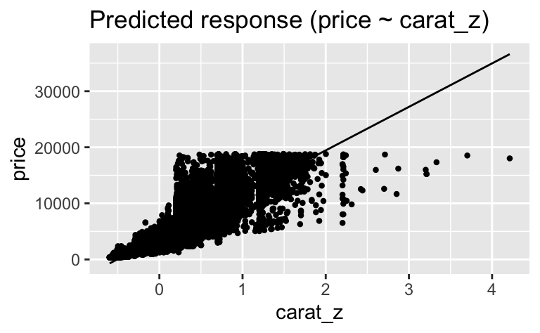

library(tidyverse)
library(easystats)
diamonds <- read_csv("https://vincentarelbundock.github.io/Rdatasets/csv/ggplot2/diamonds.csv")adjustieren2a
regression
2023
string
Aufgabe
Betrachten Sie folgendes Modell, das den Zusammenhang des Preises (price) und dem Gewicht (carat) von Diamanten untersucht (Datensatz diamonds).
Aber zuerst zentrieren wir den metrischen Prädiktor carat, um den Achsenabschnitt besser interpretieren zu können.
diamonds <-
diamonds %>%
mutate(carat_z = carat - mean(carat, na.rm = TRUE))Dann berechnen wir ein (nicht-bayesianisches, sondern frequentistisches) Regressionsmodell:
lm1 <- lm(price ~ carat_z, data = diamonds)
parameters(lm1)| Parameter | Coefficient | SE | CI | CI_low | CI_high | t | df_error | p |
|---|---|---|---|---|---|---|---|---|
| (Intercept) | 3932.800 | 6.667655 | 0.95 | 3919.731 | 3945.868 | 589.8325 | 53938 | 0 |
| carat_z | 7756.426 | 14.066579 | 0.95 | 7728.855 | 7783.996 | 551.4081 | 53938 | 0 |
Zur Verdeutlichung ein Diagramm zum Modell:
estimate_relation(lm1) |> plot()
Aufgaben:
Was kostet in Diamant mittlerer Größe laut Modell
lm1? Runden Sie auf eine Dezimale. Geben Sie nur eine Zahl ein.Geben Sie eine Regressionsformel an, die
lm1ergänzt, so dass die Schliffart (cut) des Diamanten kontrolliert (adjustiert) wird. Anders gesagt: Das Modell soll die mittleren Preise für jede der fünf Schliffarten angeben. Geben Sie nur die Regressionsformel an. Lassen Sie zwischen Termen jeweils ein Leerzeichen Abstand.
Hinweis: Es gibt (laut Datensatz) folgende Schliffarten (und zwar in der folgenden Reihenfolge):
diamonds %>%
distinct(cut)| cut |
|---|
| Ideal |
| Premium |
| Good |
| Very Good |
| Fair |
Lösung
- Unser Modell
lm1schätzt den Preis eines Diamanten mittlerer Größe auf etwa3932.5(was immer auch die Einheiten sind, Dollar vermutlich). Da der Prädiktorcarat_zzentriert ist, entspricht ein Wert von0dem Mittelwert der ursprünglichen Verteilung,carat. Der Y-Wert, wenn X=0, wird vom Intercept angegeben.
parameters(lm1)| Parameter | Coefficient | SE | CI | CI_low | CI_high | t | df_error | p |
|---|---|---|---|---|---|---|---|---|
| (Intercept) | 3932.800 | 6.667655 | 0.95 | 3919.731 | 3945.868 | 589.8325 | 53938 | 0 |
| carat_z | 7756.426 | 14.066579 | 0.95 | 7728.855 | 7783.996 | 551.4081 | 53938 | 0 |
Oder so:
coef(lm1)(Intercept) carat_z
3932.800 7756.426 Alternativ können wir uns mit predict für jeden beliebigen Wert des Prädiktors die Vorhersage des Modells ausgeben lassen.
Wir definieren eine (hier sehr kurze) Tabelle mit Prädiktorwerten, für die wir die Vorhersage laut lm1 wissen möchten:
neue_daten <-
tibble(carat_z = 0)Dann weisen wir unseren Lieblingsroboter an, auf Basis von lm1 eine Vorhersage (prediction) für neue_daten zu erstellen.
predict(lm1, newdata = neue_daten) 1
3932.8 price ~ carat_z + cut
Dieses zweite Modell könnten wir so berechnen:
lm2 <- lm(price ~ carat_z + cut, data = diamonds)
parameters(lm2)| Parameter | Coefficient | SE | CI | CI_low | CI_high | t | df_error | p |
|---|---|---|---|---|---|---|---|---|
| (Intercept) | 2405.180 | 37.82838 | 0.95 | 2331.036 | 2479.324 | 63.58136 | 53934 | 0 |
| carat_z | 7871.082 | 13.97963 | 0.95 | 7843.682 | 7898.482 | 563.03950 | 53934 | 0 |
| cutGood | 1120.332 | 43.49923 | 0.95 | 1035.073 | 1205.591 | 25.75521 | 53934 | 0 |
| cutIdeal | 1800.924 | 39.34443 | 0.95 | 1723.809 | 1878.039 | 45.77329 | 53934 | 0 |
| cutPremium | 1439.077 | 39.86533 | 0.95 | 1360.941 | 1517.214 | 36.09846 | 53934 | 0 |
| cutVery Good | 1510.135 | 40.24008 | 0.95 | 1431.265 | 1589.006 | 37.52814 | 53934 | 0 |
Man könnte hier noch einen Interaktionseffekt ergänzen, wenn man Grund zur Annahme hat, dass es einen gibt.
Categories:
- regression
- ‘2023’
- string